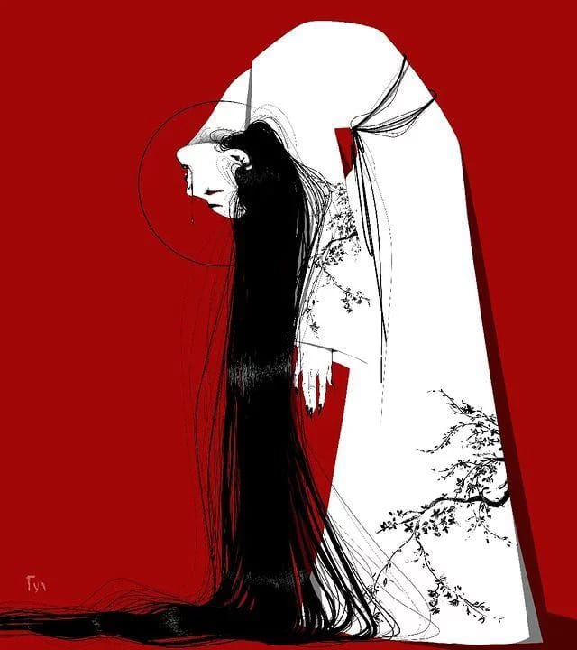

A estética japonesa é regida pelo conceito de Ma (o intervalo ou espaço vazio) e pelo Wabi-sabi (a aceitação da imperfeição e da transitoriedade). Quando uma marca nacional decide adotar esse DNA, ela não está apenas copiando um estilo estrangeiro, mas sim filtrando a exuberância brasileira através de uma lente de contenção e propósito. Diferente do minimalismo europeu, que busca a frieza da perfeição industrial, a marca nacional com influência japonesa foca na geometria orgânica. As peças — sejam de moda, design de interiores ou cerâmica — apresentam: Cortes limpos: Silhuetas que priorizam o conforto e a liberdade de movimento. Matérias-primas naturais: O uso do linho, algodão cru, madeira de reflorestamento e cerâmica feita à mão. Paleta de cores terrosa: Tons que remetem ao bambu, ao índigo natural e ao concreto, contrastando com o verde das matas brasileiras. Em um mercado saturado por tendências passageiras, essa marca se posiciona como um manifesto de Slow Design. Cada produto é pensado para durar décadas, não meses. A influência japonesa traz o rigor técnico — a costura impecável, o encaixe perfeito da madeira — enquanto o toque brasileiro adiciona o calor e a adaptabilidade. "A beleza não está no objeto em si, mas nos padrões de sombras, na luz e nas trevas que o objeto cria." — Junichiro Tanizaki (Em Louvor da Sombra). O Brasil abriga a maior comunidade japonesa fora do Japão. Essa conexão não é apenas histórica, é afetiva. Marcas nacionais que seguem essa linha conseguem traduzir o caos urbano das nossas metrópoles em oásis de serenidade.
